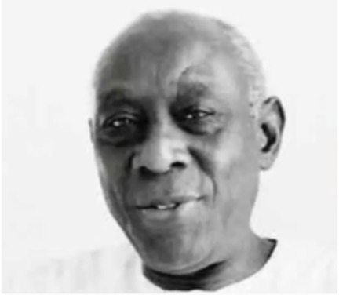

Rappel à Dieu de M. Cheikh Hamidou KANE, parrain de l'UN-CHK
4 octobre 2026
L’Université numérique Cheikh Hamidou Kane (UN-CHK) a appris avec une profonde affliction le rappel à Dieu de son illustre parrain, Monsieur Cheikh Hamidou Kane.
Lire la suite →